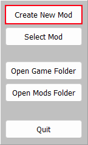
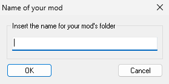
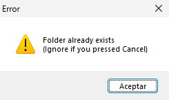
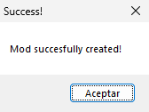
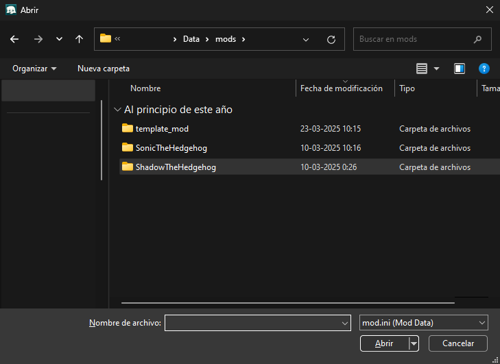
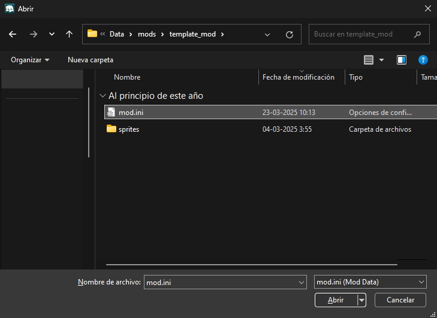

Previous (Starting Screen Guide)
Creating a new mod
First, you have to click "Create New Mod" in the Mod Creator's Starting Screen.
Then, a window like this should pop-up:

You can insert the name of your mod's folder, make sure to avoid common names so mods don't get overwritten if 2 with the same name exists.
(For example, set your mod's name to your character's name + your username)
EX: "kaorin_lukasatbk" or "kaorin_cghXw"
I would also recommend avoid putting version names in the folder's name, as players will have to manually delete the old version and the game will forget what character you were playing last.
In case the folder already exists, you'll get another pop-up like this:

Just press "Accept" and try out another name.
In case the name works, then you'll get this pop-up:

Which means now everything has been set up correctly, you can proceed by clicking "Accept", it'll take you to the Mod Creator screen.
Opening a mod
First, you have to click "Select Mod" in the Mod Creator's Starting Screen.Then, a window like this should pop-up:

You have to go to your mod's folder and select "mod.ini", then, double click it or press Enter.

Now you should be able to see the mod you selected on the character creator screen.